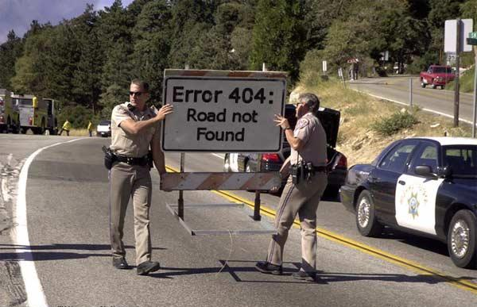
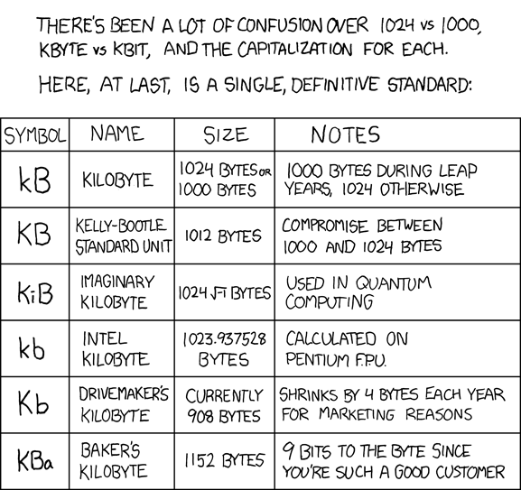

|
|
|
|
|  |
Хочу описать некоторые инструменты, которыми пользуются практически во всех областях IT. Я уделил им внимание, так как они достаточно новы для "нашей" компьютерной графики, но активно "набирают обороты". В этот список можно смело добавить Python, Perl, PHP, Tcl и, конечно же, сам Linux, но они и так уже повсеместно используются, практически во всех областях. Например Nuke, Maya уже на Qt. Houdini, Nuke, Maya используют Python в качестве скриптового языка. Серьёзные админы и разработчики пользуются всеми перечисленными инструментами.
Я считаю что у "нашей" CG индустрии есть большой пробел - люди, которые разбираются в компьютерах. Парадоксально, существует не мало фирм, занимающихся компьютерной графикой, а там ни одного админа или технического директора, одни артисты (ударение на первую "а" - сокр. от CG Artist).
Нередко руководство берёт в фирму или просто на проект моделлеров, аниматоров, текстурщиков, композеров и прочих артистов. Нанимает менеджеров, продюсеров. А потом удивляются, что что-то не получается, причём обычно к середине или даже концу проекта, потому что промежуточный результат такая команда сделать обычно в состоянии. Как же так. Есть же моделлер - он умет хорошо моделить, аниматор, который хорошо анимирует и так далее. И менеджер есть, который бегает раздаёт задания, записывает кто что уже сделал и говорит каждому что делать дальше. Что же ещё нужно?
Но это ещё пол беды. Такая команда хоть что-то может. И есть вероятность, что среди них попадётся один "компьютерщик", который стихийно станет управлять всем с технической стороны. Тогда это вообще может перерасти в полноценную команду. У "нас" небось все известные сильные команды так и стихийно и получились. Не слышал ещё опыта, когда руководители набрали сразу целую команду разных артистов на "пустом" месте, и из этого вышло что-то путное. Знакомая ситуация? Хорошо если хоть что-то когда-нибудь доделают, о сдачи полного объёма в срок речи не идёт вообще.
Бывает ещё хуже. Когда собираются не моделлеры, аниматоры и прочие артисты, а люди знающие MAX - "максисты", или MAYA - "майщики". Вот они вообще просто перлы выдают. Вы бы пошли к дантисту, который прочёл инструкцию по бор-машинке? Пускай он даже помнит её наизусть. Должна быть база, чему-то ещё учат зубных врачей и не один год.
У любой фирмы и проекта должен быть арт директор и технический директор. Причём размер фирмы значения не имеет. Хоть два человека, художник и технарь, хоть даже один. Главное всегда должен быть люди отвечающие за фирму и за каждый проект с технической и с художественной точки зрения и держащей в голове всё что происходит. Пусть это даже будет один и тот же человек.
Зачем нужен арт-директор обычно ещё понимают. Надо чтобы кто-то следил чтобы каждый артист делал всё в одном стиле, согласно концептам проекта, которые он может сам и нарисовал. Нередко за этим следит супервайзер. Ну и ТД нужен для того же самого. Связать всех артистов воедино. Давать чёткие технические требования моделлерам, текстурщикам. Чтобы они потом не валили друг на друга, когда затекстуренная модель будет плохо выглядеть. Чтобы они брали и складывали материал куда надо, и потом никто ничего не искал. Чтобы бедный моделлер не загнулся над тем, что можно сделать бампом. Чтобы максимум графики делалось в 2д, если так быстрее. Короче чтобы люди, которые хорошо рисуют, не забивали гвозди плоскогубцами. Супервайзер ещё может это заметить, но не всегда, у него и без этого куча дел. Менеджер, продюсер не заметят. А вот у ТД это может быть быть прямой обязанностью.
Так вот. Ещё в фирме должен быть хотя бы один человек, который сечёт в компьютерах в целом, желательно чтобы ему ещё было не всё равно, что вокруг происходит. Это может быть ТД, админ или даже любой из работников, кому это интересно. Чтобы он видел, что файлы из одной комнаты в другую носят на флешках. Хранят нужную информацию по состоянию проекта в Exel-е причём в папке "Мои Документы", и в день по несколько раз переделывают какие-то таблички. А потом долго обсуждают на форумах почему "мы" отстаём от "них".
|  |

|
|

|
{kind=link}
{kind=link}